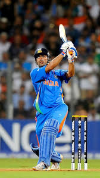
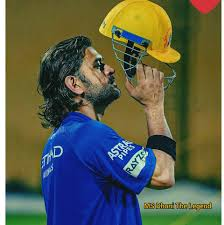
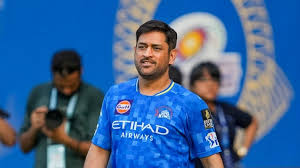

Learn about Shivaji Maharaj, Learn about Rohit Sharma, Learn about Virat Kohli.



Mahendra Singh Dhoni (born 7 July 1981) is a former Indian international cricketer and captain who led the Indian national team to victory in the 2007 T20 World Cup, 2011 Cricket World Cup, and 2013 Champions Trophy. Known as "Captain Cool", Dhoni is one of the most successful captains in the history of cricket. He is also the captain of Chennai Super Kings (CSK) in the IPL and is admired for his calm demeanor and excellent finishing skills.
Youth career
He played as a wicket-keeper for Commando cricket club from 1995 to 1998 and Central Coal Fields Limited (CCL) team in 1998. At CCL, he batted higher up the order and helped the team qualify to the higher division. Based on his performance at club cricket, he was picked for the 1997/98 season of Vinoo Mankad Trophy under-16 championship.
In the 1998-99, Dhoni played for Bihar U-19 team in the Cooch Behar Trophy and scored 176 runs in 5 matches.
In the 1999-2000 Cooch Behar Trophy, the Bihar U-19 cricket team made it to the finals, where Dhoni made 84 in a losing cause. Dhoni's contribution in the tournament included 488 runs in nine matches with five fifties, 17 catches and seven stumpings. Dhoni made it to the East Zone U-19 squad for the C. K. Nayudu Trophy in the 1999-2000 season and scored only 97 runs in four matches, as East Zone lost all the matches and finished last in the tournament.
Dhoni made his Ranji Trophy debut for Bihar against Assam in the 1999-2000 season, as an eighteen-year-old scoring 68 runs in the second innings. Dhoni finished the season with 283 runs in 5 matches. Dhoni scored his maiden first-class century while playing for Bihar against Bengal in the 2000-01 Ranji Trophy season. Apart from this century, his performance in the 2000/01 season did not include another score over fifty and in the 2001-02 Ranji Trophy season, he scored just five fifties in four Ranji matches. Dhoni's played for Jharkhand in the 2002-03 Ranji Trophy and represented East Zone in the Deodhar Trophy where he started gaining recognition for his lower-order contribution as well as hard-hitting batting style. In the 2003/04 season, Dhoni scored a century (128*) against Assam in the first match of the Ranji ODI tournament and was part of the East Zone squad that won the Deodhar Trophy 2003-2004 season scoring 244 runs in four matches.
In the Duleep Trophy finals, Dhoni represented East Zone and scored a fighting half-century in the second innings in a losing cause. Dhoni was identified as one of the emerging talents via the BCCI's small-town talent-spotting initiative TRDW. In 2004, Dhoni was picked for the India A squad for a tour of Zimbabwe and Kenya. Against the Zimbabwe XI in Harare Sports Club, Dhoni effected seven catches and four stumpings. In the tri-nation tournament involving Kenya, India A and Pakistan A, Dhoni helped India A chase down their target of 223 against Pakistan A with a half-century and scored 362 runs in six innings at an average of 72.40 with back to back centuries.